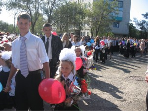
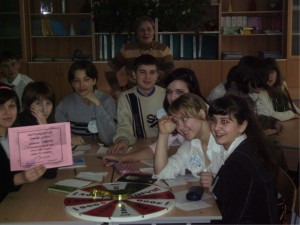
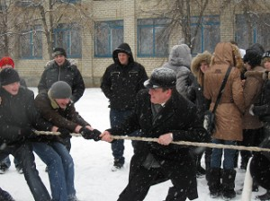

Воспитательная работа школы
C 2005-2006 учебного года школа работает по воспитательной программе "Гармоничное развитие личности", цель которой воспитать полноценную психически и физически здоровую личность с устойчивым нравственным поведением, способную к саморегуляции и самоопределению в социуме.
Для реализации данной программы школа использует следующие направления работы:
- Традиции;
- Личность;
- Творчество;
- Самоуправление;
- Школа и родители.
С 2006 года в школе действует детская организация "Страна Олимпия".

1 сентября - это праздник для всего микрорайона нашей школы, и самые главные на этом празднике наши первоклассники и выпускники.
На городской выставке цветов школа заняла 4 место. Работы "Спят усталые игрушки" и "Лебединая верность" были признаны одними из лучших в номинациях "Букет из живых цветов" и "Композиция из фруктов и овощей".
Не только в стране, но и в школе проходят демократические выборы Президента. Только ребята выбирают своего лидера - того, кто поведет их за собой, возглавит ученический коллектив Страну Олимпию. В этом году Президентом была избрана ученица 10а класса Жуйкова Наталья.
В сентябре месяце в школе традиционно проходит ученическая конференция, на которой рассматриваются вопросы, связанные с жизнедеятельностью детской организации Страны Олимпия.
Третий год все учащиеся школы, которые принимали активное участие в городских конкурсах, выезжают на природу. "Тропой побед" так называется это незабываемое для всех мероприятие, которого с нетерпением ждут не только ребята, но и педагоги школы.
Каждый год учащиеся школы готовят сюрпризы своим учителям в их профессиональный праздник "День учителя". В этом году кроме традиционного концерта для учителей, в котором принимали участие ребята 2-11 классов, учителей ждал необычный подарок.
Традиционный легкоатлетический кросс, который проводится школой в октябре месяце в питомнике, в этом году был дополнен обязательным конкурсом "Физминутка". Оценивалось не только правильное выполнение упражнений, но и творческий подход к их проведению.
На городской игре "Безопасное колесо" команда школы, в которую вошли учащиеся 6а класса, заняла 2 место.
В ноябре 2008 года школьная команда ЮИД представляла город на зональном конкурсе агитбригад по ПДД в г. Жирновске, где завоевала 2 место.

К учебе можно подходить творчески. Это доказали учащиеся школы во время проведения недели математики. На фотографии учащиеся 10а и 10б классов на игре "Что? Где? Когда?".
Очень интересно в библиотеке школы прошел конкурс чтецов "Моя семья", в котором принимали участие учащиеся 1-4 классов. Победителем школьного конкурса стал ученик 1а класса Кожинский Даниил. В городском конкурсе чтецов Даниил занял 4 место.
Формированию безопасного образа жизни детей в школе уделяют много внимания. Не только на уроках ОБЖ, но и на классных часах ребят знакомят с правилами поведения в различных ситуациях, связанных с опасностью для жизни, систематически проводят учебные занятия по эвакуации учащихся из здания школы.
Долгожданный новогодний утренник для ребят начальной школы подготовили и провели актеры нашего драматического театра.
Творческие соревнования "Зимушка - Зима" прошли в январе для учащихся 1-4 классов. Каждый класс по специальному маршруту, разработанного для них ребятами из комитета культуры Страны Олимпия, должен был показать не только свои знания этого времени года, но и проявить свои творческие и прикладные способности.
Традиционные мероприятия, которые проводятся в школе накануне нового года- "Маленькие звездочки" для начальной школы и "Восходящая звезда" для учащихся 5-11 классов. Это время - время талантов и стать им может каждый, стоит только попробовать.
Команда ученического самоуправления нашей школы на городском конкурсе " Лидер и его команда" заняла 6 место, а Президент Страны Олимпия Жуйкова Наталья была признана лучшим лидером среди коллективов школ города.
Школьные годы по праву называются самыми чудесными. Это период приобретения верных и надежных друзей, которые, как правило, остаются с нами на всю жизнь.
Каждый год 2 февраля школа встречает своих выпускников. К этому празднику готовится вся школа.
В первый весенний день все учащиеся школы вместе с родителями пришли в школу, чтобы устроить проводы Масленице. Не обошел стороной этот праздник и наш друг Илья Львович Волков. Ребятам пришлось очень постараться, чтобы вырвать победу из его крепких рук.

Жизнь школы продолжается и весной учащихся, родителей и учителей школы ждет еще много интересных мероприятий!
|